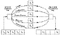

| Previous | Table of Contents | Next |
Key Distribution in Large Networks
Key-encryption keys shared by pairs of users work well in small networks, but can quickly get cumbersome if the networks become large. Since every pair of users must exchange keys, the total number of key exchanges required in an n-person network is n(n – 1)/2.
In a six-person network, 15 key exchanges are required. In a 1000-person network, nearly 500,000 key exchanges are required. In these cases, creating a central key server (or servers) makes the operation much more efficient.
Alternatively, any of the symmetric-cryptography or public-key-cryptography protocols in Section 3.1 provides for secure key distribution.

Figure 8.2 Key distribution via parallel channels.
When Bob receives a key, how does he know it came from Alice and not from someone pretending to be Alice? If Alice gives it to him when they are face-to-face, it’s easy. If Alice sends her key via a trusted courier, then Bob has to trust the courier. If the key is encrypted with a key-encryption key, then Bob has to trust the fact that only Alice has that key. If Alice uses a digital signature protocol to sign the key, Bob has to trust the public-key database when he verifies that signature. (He also has to trust that Alice has kept her key secure.) If a Key Distribution Center (KDC) signs Alice’s public key, Bob has to trust that his copy of the KDC’s public key has not been tampered with.
In the end, someone who controls the entire network around Bob can make him think whatever he likes. Mallory could send an encrypted and signed message purporting to be from Alice. When Bob tried to access the public-key database to verify Alice’s signature, Mallory could substitute his own public key. Mallory could invent his own false KDC and exchange the real KDC’s public key for his own creation. Bob wouldn’t be the wiser.
Some people have used this argument to claim that public-key cryptography is useless. Since the only way for Alice and Bob to ensure that their keys have not been tampered with is to meet face-to-face, public-key cryptography doesn’t enhance security at all.
This view is naïve. It is theoretically true, but reality is far more complicated. Public-key cryptography, used with digital signatures and trusted KDCs, makes it much more difficult to substitute one key for another. Bob can never be absolutely certain that Mallory isn’t controlling his entire reality, but Bob can be confident that doing so requires more resources than most real-world Mallorys have access to.
Bob could also verify Alice’s key over the telephone, where he can hear her voice. Voice recognition is a really good authentication scheme. If it’s a public key, he can safely recite it in public. If it’s a secret key, he can use a one-way hash function to verify the key. Both PGP (see Section 24.12) and the AT&T TSD (see Section 24.18) use this kind of key verification.
Sometimes, it may not even be important to verify exactly whom a public key belongs to. It may be necessary to verify that it belongs to the same person to whom it belonged last year. If someone sends a signed withdrawal message to a bank, the bank does not have to be concerned with who withdraws the money, only whether it is the same person who deposited the money in the first place.
Error Detection during Key Transmission
Sometimes keys get garbled in transmission. Since a garbled key can mean megabytes of undecryptable ciphertext, this is a problem. All keys should be transmitted with some kind of error detection and correction bits. This way errors in transmission can be easily detected and, if required, the key can be resent.
One of the most widely used methods is to encrypt a constant value with the key, and to send the first 2 to 4 bytes of that ciphertext along with the key. At the receiving end, do the same thing. If the encrypted constants match, then the key has been transmitted without error. The chance of an undetected error ranges from one in 216 to one in 232.
Key-error Detection during Decryption
Sometimes the receiver wants to check if a particular key he has is the correct symmetric decryption key. If the plaintext message is something like ASCII, he can try to decrypt and read the message. If the plaintext is random, there are other tricks.
The naïve approach is to attach a verification block: a known header to the plaintext message before encryption. At the receiving end, Bob decrypts the header and verifies that it is correct. This works, but it gives Eve a known plaintext to help cryptanalyze the system. It also makes attacks against short-key ciphers like DES and all exportable ciphers easy. Precalculate the checksum once for each key, then use that checksum to determine the key in any message you intercept after that. This is a feature of any key checksum that doesn’t include random or at least different data in each checksum. It’s very similar in concept to using salt when generating keys from passphrases.
Here’s a better way to do this [821]:
This gives Eve some information, but very little. If she tries to use the low 32 bits of the final hash value to mount a brute-force attack, she has to do multiple encryptions plus a hash per candidate key; brute-force on the key itself would be quicker.
She also gets no known-plaintext values to try out, and even if she manages to choose our random value for us, she never gets a chosen-plaintext out of us, since it goes through the hash function before she sees it.
Software encryption is scary. Gone are the days of simple microcomputers under the control of single programs. Now there’s Macintosh System 7, Windows NT, and UNIX. You can’t tell when the operating system will suspend the encryption application in progress, write everything to disk, and take care of some pressing task. When the operating system finally gets back to encrypting whatever is being encrypted, everything will look just fine. No one will ever realize that the operating system wrote the encryption application to disk, and that it wrote the key along with it. The key will sit on the disk, unencrypted, until the computer writes over that area of memory again. It could be minutes or it could be months. It could even be never; the key could still be sitting there when an adversary goes over the hard drive with a fine-tooth comb. In a preemptive, multitasking environment, you can set your encryption operation to a high enough priority so it will not be interrupted. This would mitigate the risk. Even so, the whole thing is dicey at best.
Hardware implementations are safer. Many encryption devices are designed to erase the key if tampered with. For example, the IBM PS/2 encryption card has an epoxy unit containing the DES chip, battery, and memory. Of course, you have to trust the hardware manufacturer to implement the feature properly.
Some communications applications, such as telephone encryptors, can use session keys. A session key is a key that is just used for one communications session—a single telephone conversation—and then discarded. There is no reason to store the key after it has been used. And if you use some key-exchange protocol to transfer the key from one conversant to the other, the key doesn’t have to be stored before it is used either. This makes it far less likely that the key might be compromised.
| Previous | Table of Contents | Next |
){kind=link}
){kind=link}